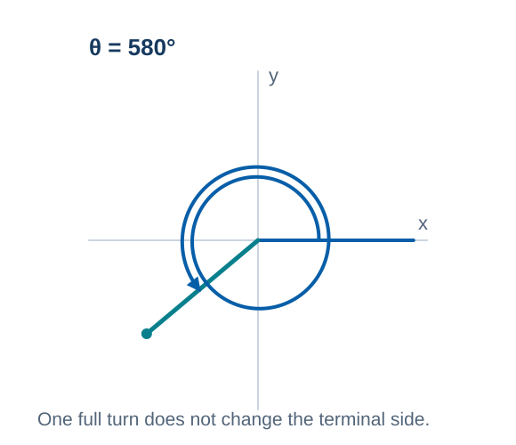
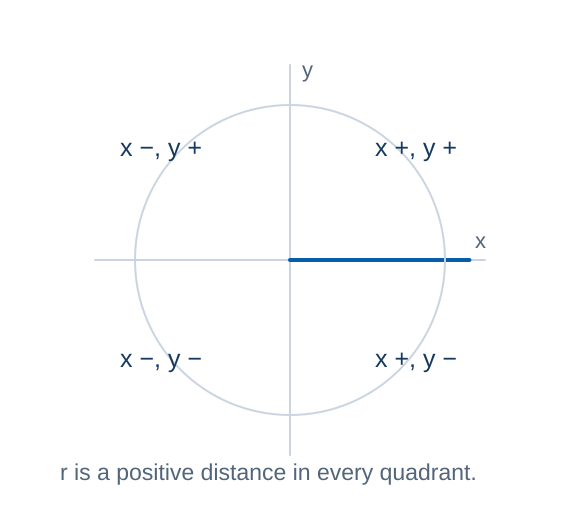
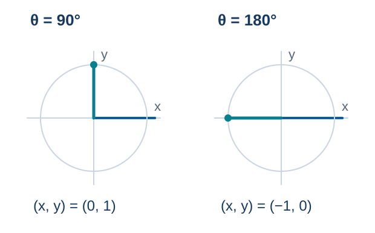
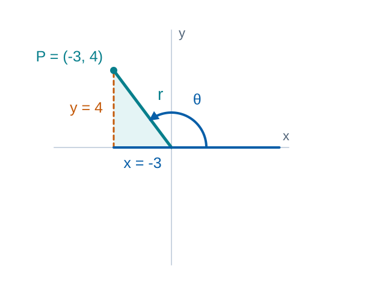
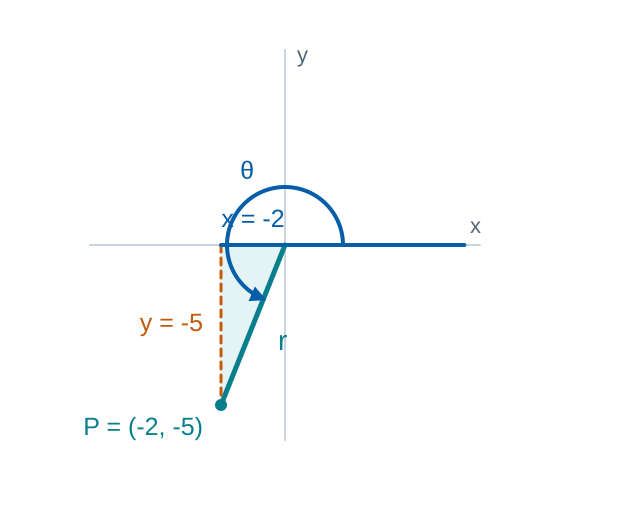
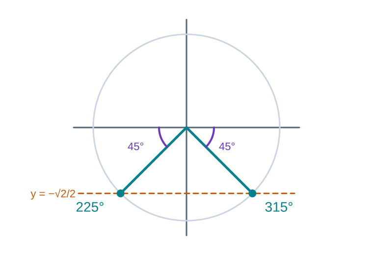
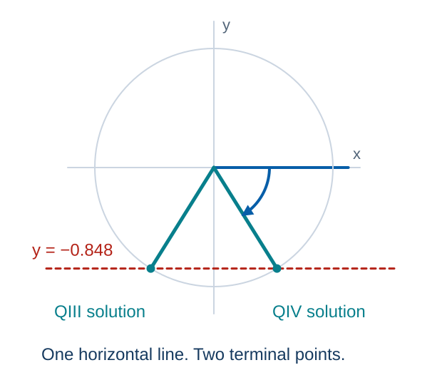
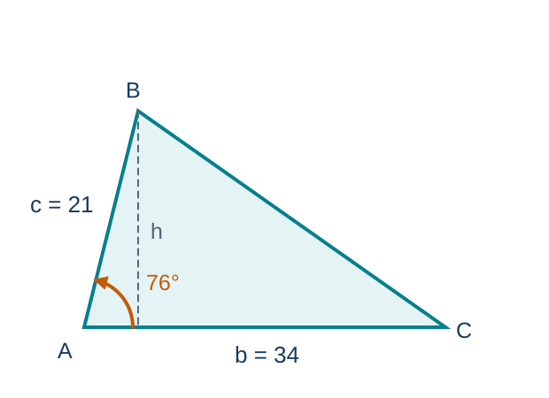

MATH 130 · Unit 3B
Trigonometric Functions of Any Angle
Section 5.3. Reference angles, signs, exact values, and equations.
55 minutes · Offline capable
From an angle to a value
- 1
Locate the terminal side and its reference angle.
- 2
Use coordinates to explain a function’s sign.
- 3
Evaluate exact values and find every solution in an interval.
- 4
Optional extension: area from two sides and their included angle.
Activate · 0.5 minSource: 1
Which axis defines a reference angle?
Predict firstFor $\theta=150^\circ$, is the reference angle $30^\circ$ or $60^\circ$? Sketch your reason.
Commit to a response before discussion.
Feedback and solution$30^\circ$: measure to the x-axis. The $60^\circ$ angle meets the y-axis.
Activate · 1.0 minSource: Authored
Rotate, predict, then reveal
Choose an angle. Predict its reference angle and signs, then test your reasoning.
Predict the quadrant, reference angle, and signs before revealing.
Practice · 3 minSource: Authored
Different rotations, the same method
Find reference angles for $150^\circ$, $310^\circ$, $-120^\circ$, and $7\pi/4$.
1$150^\circ$ has reference angle $30^\circ$; $310^\circ$ has $50^\circ$.
2$-120^\circ$ is coterminal with $240^\circ$, so its reference angle is $60^\circ$.
3$7\pi/4$ has reference angle $\pi/4$.
Model · 3.0 minSource: 5
More than one full turn
Student practiceFind the reference angle for 580°.
Feedback and solution$580-360=220^\circ$, so the QIII reference angle is 40°.

Remove full rotations before locating the reference angle.Practice · 3.0 minSource: 6, 7
A plausible angle, measured from the wrong axis
Error analysis- A student calls the orange $60^\circ$ angle the reference angle for $150^\circ$.
- Explain the mistake to a partner, then state the correct reference angle.
Feedback and solutionThe orange arc meets the y-axis. The reference angle meets the x-axis: $180^\circ-150^\circ=30^\circ$.
Feedback · 1 minSource: 8
Pacing checkpointExplain the reference-angle rule
State the quadrant formulas for reference angles.
Exit responseAnswer in complete mathematical sentences and identify one remaining question.
Synthesize · 0.5 minSource: 9
Two sign clues, one quadrant
Predict firstIf tangent is positive and cosine is negative, which quadrant is possible?
Commit to a response before discussion.
Feedback and solutionQuadrant III. Both sign conditions must hold at the same time.
Activate · 1.0 minSource: Authored
Coordinates explain the signs
1ASTC summarizes positive functions by quadrant.
2Signs follow from x, y, and positive r.

The signs come from x and y; r is always positive.Explain · 2.5 minSource: 10
Intersect the possible quadrants
Determine the quadrant if $\tan\theta>0$ and $\cos\theta<0$.
- Tangent is positive in Quadrants I and III.
- Cosine is negative in Quadrants II and III.
- The intersection is Quadrant III.
Model · 2 minSource: Authored
Choose a quadrant and defend it
Student practiceDetermine the quadrant if $\sin\theta>0$ and $\sec\theta<0$.
Feedback and solutionQuadrant II.
Practice · 3.0 minSource: 11
Check the coordinate signs
Use the intersection of sign conditions.
Reciprocal functions share the sign of their partner.
Feedback · 2.0 minSource: Authored
Pacing checkpointExplain a sign without the mnemonic
Explain ASTC using the signs of x and y rather than memorization.
Exit responseAnswer in complete mathematical sentences and identify one remaining question.
Synthesize · 0.5 minSource: Authored
What stays positive?
Predict firstWhat does r represent for a point $(x,y)$ on a terminal side?
Commit to a response before discussion.
Activate · 1.0 minSource: Authored
Six ratios from one terminal point
Concept- For a nonzero terminal point $(x,y)$, $r=\sqrt{x^2+y^2}>0$.
- $\sin\theta=y/r$, $\cos\theta=x/r$, $\tan\theta=y/x$.
- $\csc\theta=r/y$, $\sec\theta=r/x$, $\cot\theta=x/y$.
- A function is undefined when its denominator is zero.
Explain · 2.5 minSource: 4, 12
Angles on the coordinate axes
- At $90^\circ$, $x=0$: $\sin\theta=1$, $\cos\theta=0$, and $\tan\theta$ is undefined.
- At $180^\circ$, $y=0$: $\sin\theta=0$, $\cos\theta=-1$, and $\cot\theta$ is undefined.
These angles have no acute reference angle. Check the denominator directly.

An axis point can put zero in a denominator.Explain · 2 minSource: Authored
A point in Quadrant II
For $P=(-3,4)$, calculate r and all six trigonometric values.
- $r=\sqrt{(-3)^2+4^2}=5$.
- $\sin\theta=4/5$, $\cos\theta=-3/5$, $\tan\theta=-4/3$.
- $\csc\theta=5/4$, $\sec\theta=-5/3$, $\cot\theta=-3/4$.

The signed coordinates locate the point. The radius is a length.Model · 3.0 minSource: 13
A point in Quadrant III
Student practiceFind exact trig values for $P=(-2,-5)$ and evaluate $\sin240^\circ$.
Feedback and solution- For $P=(-2,-5)$, $r=\sqrt{29}$; $\sin=-5/\sqrt{29}$, $\cos=-2/\sqrt{29}$, $\tan=5/2$.
- $\csc=-\sqrt{29}/5$, $\sec=-\sqrt{29}/2$, $\cot=2/5$; $\sin240^\circ=-\sqrt3/2$.

Use the coordinate signs in the six ratios.Practice · 3.0 minSource: 14, 15
Distance and coordinates have different roles
Error analysis- r is always positive.
- Rationalize denominators only when required by course convention.
Self-checkWhat evidence confirms the setup, sign, unit, or magnitude?
Feedback · 1 minSource: 16
Pacing checkpointFrom a point to six values
Describe the point-to-ratios workflow in three steps.
Exit responseAnswer in complete mathematical sentences and identify one remaining question.
Synthesize · 0.5 minSource: 17
OptionalModel the Skill: solve a sine or cosine equation
Find all $\theta$ in $[0^\circ,360^\circ)$ with $\sin\theta=-\tfrac{\sqrt2}{2}$.
- Reference angle: $\sin\theta'=\tfrac{\sqrt2}{2}$ gives $\theta'=45^\circ$.
- Sine is negative in Quadrants III and IV.
- $\theta=180^\circ+45^\circ=225^\circ$ and $\theta=360^\circ-45^\circ=315^\circ$.

Two terminal sides meet the line y = −√2/2.Model · 3.0 minSource: Authored
OptionalYou Try: solve a cosine equation
Student practiceFind all $\theta$ in $[0^\circ,360^\circ)$ with $\cos\theta=-\tfrac{\sqrt2}{2}$.
Feedback and solutionReference angle $45^\circ$; cosine is negative in Quadrants II and III, so $\theta=135^\circ$ and $\theta=225^\circ$.
Practice · 2.0 minSource: Authored
Calculator output and interval solutions
Find all solutions of $\sin\theta=-0.848$ with $0^\circ\leq\theta<360^\circ$. Round to two decimals.
- $\arcsin(-0.848)\approx-57.99^\circ$ points to QIV, but lies outside the interval.
- Use the unrounded $\alpha\approx57.994800^\circ$. Sine is negative in QIII and QIV.
- $\theta=180^\circ+\alpha\approx237.99^\circ$.
- $\theta=360^\circ-\alpha\approx302.01^\circ$. Check both points on the circle.

Both intersections satisfy the same sine equation.Model · 4 minSource: Authored
All solutions, including no solution
Student practice- Find all solutions on $0^\circ\leq\theta<360^\circ$, rounded to two decimals.
- (a) $\tan\theta=-1.830$; (b) $\cos\theta=0.4003$; (c) $\sin\theta=-1.637$.
Feedback and solution- (a) $\theta\approx118.65^\circ,\ 298.65^\circ$ (QII and QIV).
- (b) $\theta\approx66.40^\circ,\ 293.60^\circ$ (QI and QIV).
- (c) No real solution: a sine value must lie in $[-1,1]$.
Practice · 4 minSource: Authored
OptionalWhy must the angle be included?
Predict firstWhy must the known angle be included between the two known sides?
Commit to a response before discussion.
Activate · 1.0 minSource: Authored
OptionalArea from two sides and an angle
Concept- $A=\tfrac12bc\sin A$ uses two sides and their included angle.
- The formula applies to nonright triangles.
Explain · 2.5 minSource: 18
OptionalThe height is hidden in the diagram
Find the area when $A=76^\circ$, $b=34$, and $c=21$.
- $A_{triangle}=\tfrac12bc\sin A$.
- $A_{triangle}=\tfrac12(34)(21)\sin76^\circ\approx346.40$.
- The result is in square units.

The perpendicular height is h = c sin A.Model · 3.0 minSource: 19
OptionalChoose the sides around the angle
Student practiceFind the area when sides 12 and 15 include a 40° angle.
Feedback and solution$A=\tfrac12(12)(15)\sin40^\circ\approx57.85$.
Practice · 3.0 minSource: Authored
OptionalA formula needs matching labels
Error analysis- Match each side pair with its included angle.
- Square units are required.
Self-checkWhat evidence confirms the setup, sign, unit, or magnitude?
Feedback · 2.0 minSource: 20
OptionalPacing checkpointExplain where the sine comes from
Explain how the diagram identifies the correct sine angle.
Exit responseAnswer in complete mathematical sentences and identify one remaining question.
Synthesize · 0.5 minSource: Authored
Show what you can now explain
- State the most important idea from today without looking at your notes.
- Complete one representative setup and identify the step most likely to cause an error.
- Write one question that should be answered before the next assessment.
Exit responseAnswer in complete mathematical sentences and identify one remaining question.
Feedback and solutionUse the objective roadmap to identify any skill that still needs deliberate practice.
Synthesize · 1.5 minSource: 21